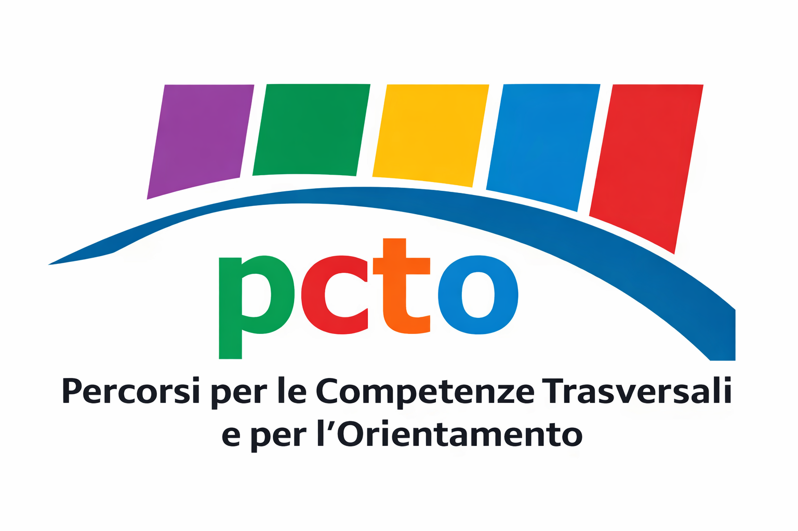
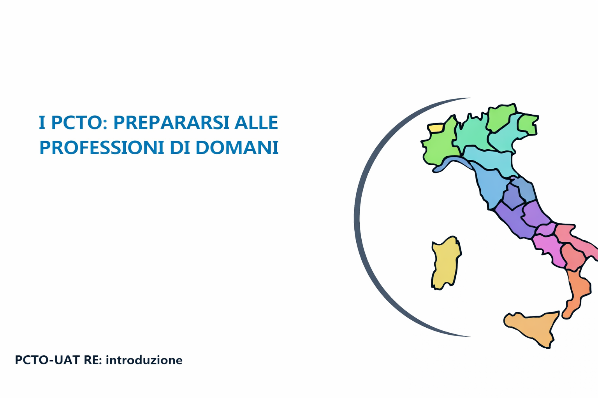

UST
Durata: 1 ora e 30 minuti + 15 minuti di test finale
Videolezione realizzata dal Professore Vairo, referente PCTO presso l'Ufficio Scolastico Territoriale di Reggio Emilia. L'argomento centrale erano i Percorsi per le Competenze Trasversali e per l'Orientamento (PCTO).
Durante la lezione sono stati trattati molti argomenti: si è partiti dalla distinzione tra lavoro subordinato e lavoro autonomo, successivamente si è parlato dell'età minima per lavorare e dell'importanza del contratto lavorativo, e anche dello smart working e di come ha cambiato il mondo del lavoro.
Altro argomento trattato è stato l'orientamento durante il triennio e la preparazione al mondo lavorativo grazie allo sviluppo di competenze trasversali, quali comunicazione, gestione del tempo e organizzazione. Sono state illustrate le caratteristiche principali del PCTO: l'obbligatorietà, la durata, il ruolo in azienda, il ruolo dei tutor e i comportamenti da tenere. La lezione si è conclusa con un test di 15 minuti per verificare l'apprendimento.
Competenze:
— Competenza personale, sociale e capacità di imparare ad imparare
— Competenza in materia di cittadinanza
RIFLESSIONE PERSONALE
Questa videolezione mi ha aiutato a capire meglio l’importanza dei PCTO e il loro valore per il futuro. Prima li consideravo solo un obbligo scolastico, ma ora ho capito che servono per avvicinarsi al mondo del lavoro e per sviluppare competenze utili.
Mi ha colpito soprattutto la parte sulle competenze trasversali, come la comunicazione, l’organizzazione e la gestione del tempo, perché sono capacità importanti sia a scuola sia nel lavoro. Anche gli argomenti sul contratto e sullo smart working sono stati interessanti, perché fanno capire meglio come funziona il mondo lavorativo.
In conclusione, questa attività è stata utile perché mi ha fatto capire che il PCTO è un’esperienza importante per crescere e prepararsi meglio al futuro.